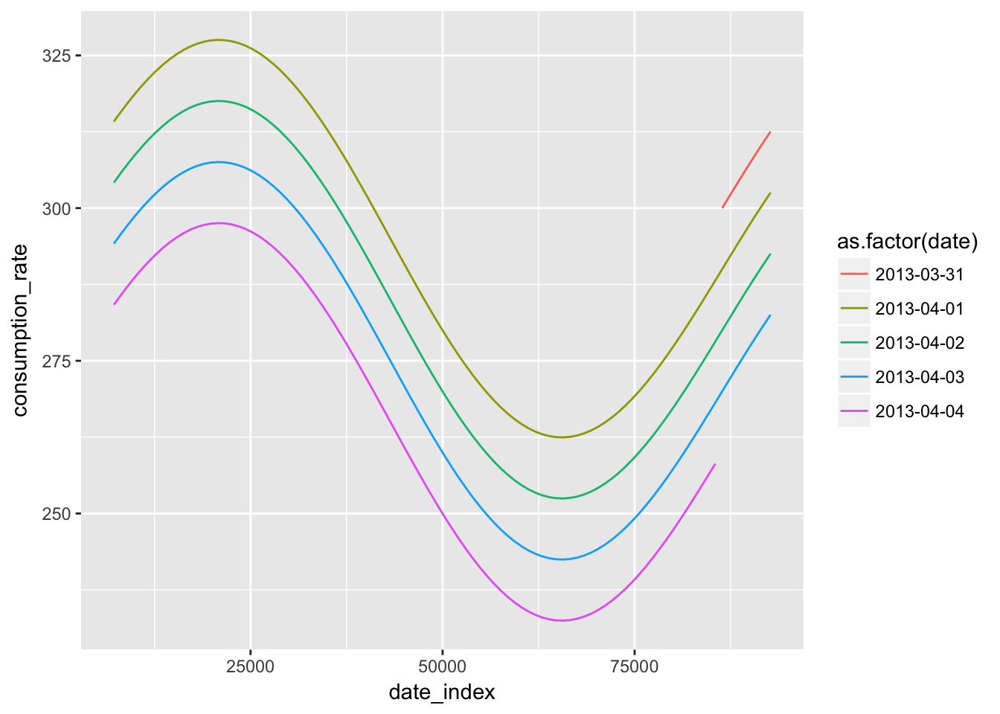

Here, I will show how to use the mute_date() function.
Just a couple simple questions, at first:
What should the API look like?
What should the function do?
For the API, I am imagining something like this:
mute_date(data = electricity, duration_ref = dhours(2))| Argument | Type | Description |
|---|---|---|
data |
data frame | tidytemps-compliant data frame |
duration_ref |
numeric | number of seconds after local midnight when a date-batch starts |
There is a deeper idea here about batches. We take a one-dimensional time-series and and “bend” it into two dimensions: say batch and batch_index. In this case, we may think of date and date_index.
The function returns a modified copy of data, adding two columns:
| Variable | Type | Description |
|---|---|---|
date |
Date | date, using local timezone, at the start of the date-batch |
date_index |
double | time (duration) since the local midnight corresponding to date (s) |
Let’s try this out:
library("tidytemps")
library("lubridate")##
## Attaching package: 'lubridate'## The following object is masked from 'package:base':
##
## datelibrary("tidyverse")## Loading tidyverse: ggplot2
## Loading tidyverse: tibble
## Loading tidyverse: tidyr
## Loading tidyverse: readr
## Loading tidyverse: purrr
## Loading tidyverse: dplyr## Conflicts with tidy packages ----------------------------------------------## as.difftime(): lubridate, base
## date(): lubridate, base
## filter(): dplyr, stats
## intersect(): lubridate, base
## lag(): dplyr, stats
## setdiff(): lubridate, base
## union(): lubridate, baseelectricity_date <-
electricity %>%
mute_date(dhours(2))
glimpse(electricity_date)## Observations: 384
## Variables: 6
## $ interval_start <dttm> 2013-04-01 00:00:00, 2013-04-01 00:15:00, 2...
## $ interval_duration <dbl> 900, 900, 900, 900, 900, 900, 900, 900, 900,...
## $ consumption_rate <dbl> 300.0000, 301.8579, 303.7075, 305.5402, 307....
## $ consumption <dbl> 75.00000, 75.46448, 75.92686, 76.38505, 76.8...
## $ date <date> 2013-03-31, 2013-03-31, 2013-03-31, 2013-03...
## $ date_index <dbl> 86400, 87300, 88200, 89100, 90000, 90900, 91...electricity_date %>%
ggplot(aes(x = date_index, y = consumption_rate)) +
geom_line(aes(color = as.factor(date)))